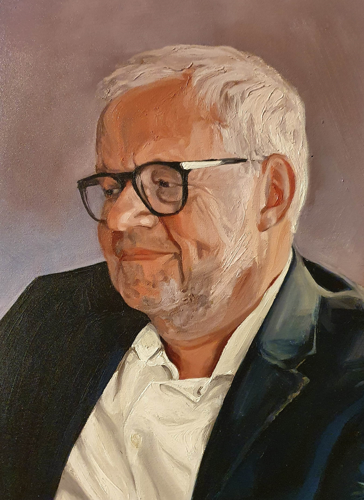
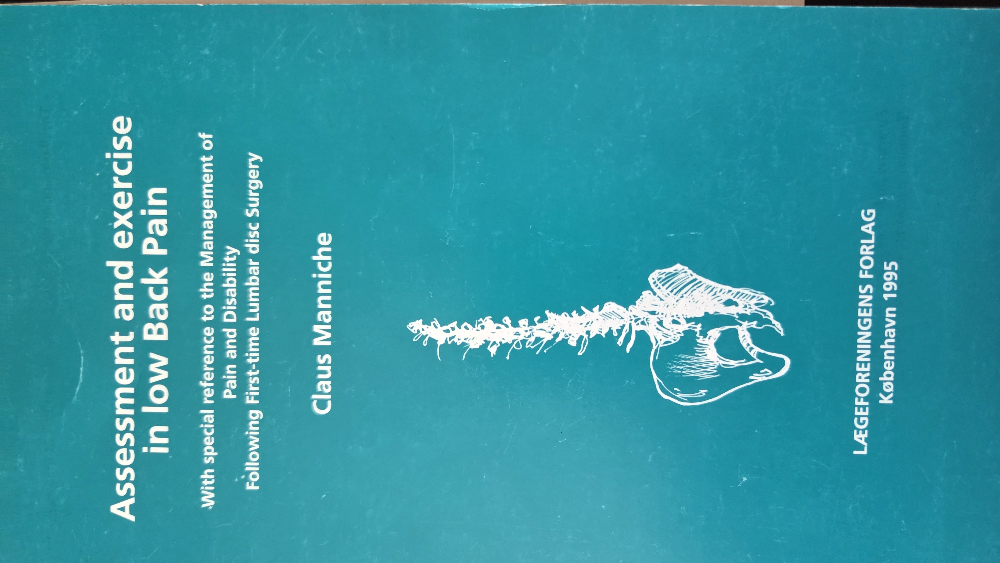
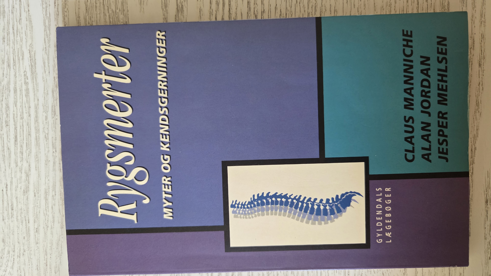

Læge · Dr.Med. · Cand.Jur. · Speciallæge i Reumatologi
Rygforsker & Gæsteprofessor · Syddansk Universitet
Over fire årtiers international forskning inden for rygsmerter, Modic-forandringer og aktiv rehabilitering. Forfatter til 268+ videnskabelige arbejder og h-indeks 58 — ophavsmand til banebrydende paradigmeskift i behandlingen af kroniske lændesmerter.
Forskning & publikationer
Modic-forskning

Baggrund
Claus Manniche er født den 21. juni 1956 i Kalundborg og er dansk reumatolog, læge, dr.med. og cand.jur. Han studerede medicin ved Københavns Universitet (kandidateksamen 1982, autorisation 1985) og opnåede sin juridiske kandidatgrad i 1988, speciallægetitlen i reumatologi i 1994 og doktorgraden (Dr.Med.) i 1995.
Fra 1998 til 2018 var han ledende overlæge og professor ved Rygcenter Syddanmark, Sygehus Lillebælt / Syddansk Universitet. I dag er han gæsteprofessor og seniorforsker ved Arbejds- og Miljømedicinsk Afdeling, Odense Universitetshospital / SDU, samt speciallæge i reumatologi i privat praksis i Odense.
Hans internationale gennembrud kom med The Lancet-studiet i 1988 — et af de allerførste randomiserede forsøg der dokumenterede, at intensiv muskeltræning er overlegent frem for sengelejet ved kroniske lændesmerter. Studiet satte standarden for aktiv rygrehabilitering globalt. Han har desuden udviklet Low Back Pain Rating Scale (LBPRS) og været synlig og aktiv i den internationale forskning i Modic-forandringer.
Sideløbende med forskningen har han redigeret det danske standardværk Reumatologi (FADL's Forlag) i fire udgaver fra 1994–2018. I 2013 medstiftede han Persica Pharmaceuticals Ltd., som udvikler intradiskal antibiotisk behandling til Modic-relaterede lændesmerter.
Ansættelseshistorik
Særligt fokus
Modic-forandringer er MRI-synlige forandringer i hvirvelendepladerne, der forekommer hos ca. 40% af patienter med kroniske lændesmerter. Claus Manniche har i over 20 år været synlig og aktiv i den internationale forskning der har afdækket disse forandringers årsager, kliniske betydning og behandlingsmuligheder — herunder langtids-antibiotikabehandling og intradiskal injektion.
Albert & Manniche dokumenterede sammenhængen mellem lumbal diskusprolaps og efterfølgende Modic type 1-forandringer — en nøglepublikation der banede vej for infektionsteorien.
Dobbeltblindet randomiseret forsøg viste signifikant effekt af 100 dages amoxicillin-clavulanat hos patienter med Modic type 1 og kroniske lændesmerter — publiceret i European Spine Journal.
FISH-baseret bevis for bakteriel biofilm i prolapseret diskvæv — et gennembrud der understøtter den infektiøse ætiologi bag Modic type 1 (Ohrt-Nissen, Manniche et al., APMIS 2018).
Manniche & Hall (Future Sci OA, 2021) samler den aktuelle evidens for antibiotikabehandling ved Modic og lavgradige diskinfektioner, herunder nyere teknologiers bekræftelse af infektionsteorien.
Seneste nyt om Modic
Forskningsområder
20+ år som synlig og aktiv international forsker i Modic-forandringer, diskusinfektioner og antibiotikabehandlingens effekt. Landmark-RCT 2013 i European Spine Journal.
The Lancet-studiet (1988) var et af de første RCT'er der beviste intensiv muskeltrænigs overlegenhed over sengelejet — et globalt paradigmeskift. Dr.Med.-afhandlingen Assessment and exercise in low Back Pain (1995) er svendeprøven inden for dette felt.
Download monografi (ResearchGate) →Udvikling og validering (1994) af LBPRS — et måleredskab til smerteintensitet, sciatica, funktionsnedsættelse og fysisk svækkelse. Fortsat i aktiv brug globalt.
Stifter af COBRA-databasen (1990) og formand for Dansk DiscusBase (1996–2005). Medudvikler af SpineData, den nationale kliniske registerdatabase for kroniske rygsmerter.
SPOC-kohorten undersøger langtidsopioidbehandlingens omfang og konsekvenser for invalidepension og mortalitet hos rygsmerter-patienter.
Forskning i Somatic Experiencing som behandling af kroniske lændesmerter med komorbid PTSD samt tilknytningsstilens rolle i smerteoplevelse.
Bibliografi

Back Pain and Modic — gratis e-bog på fire sprog

Anerkendelse
Translationel aktivitet
I 2013 medstiftede Claus Manniche Persica Pharmaceuticals Ltd. — et klinisk farmaceutisk selskab med rod i årtiers forskning i Modic-forandringer og diskusinfektioner. Selskabet udvikler PP353, en ny patenteret intradiskal antibiotisk injektion målrettet patienter med kroniske lændesmerter og Modic type 1-endepladeforandringer.
Etableringen af Persica er et direkte resultat af det landmark-RCT fra 2013, der dokumenterede effekten af oral langtidsantibiotikabehandling. Kliniske forsøg med PP353 fremskrives 2024–2025.
Udvikler PP353 — intradiskal antibiotisk injektion til Modic type 1-relaterede kroniske lændesmerter. Kliniske forsøg 2024–2025.
Besøg Persica Pharmaceuticals →Find mig online
Verificeret publikationsliste. ID: 0000-0001-5938-1483
Papers og gratis Modic e-bøger på fire sprog.
Citationsstatistik og h-indeks 58.
Officiel profil, 268+ registrerede output.
Professionelt netværk og karrierehistorik.
Biografi på engelsk Wikipedia.
Kontakt